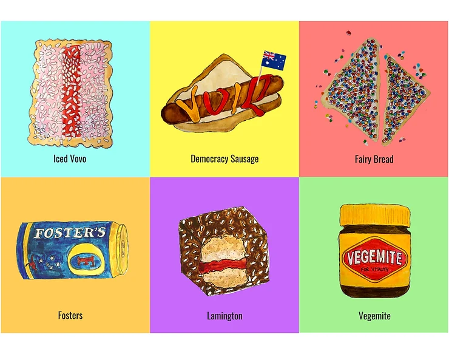

After nearly two years in the land down under I feel compelled to share that there is more to Australian food than shrimp on the barbie & bloomin’ onions... Here are six iconic Australian foods explained
Iced Vovo - The Mighty Vovo! A wheat based biscuit (cookie in American) with a strip of raspberry jam flanked by a layer of pink marshmallow fondant, sprinkled with shaved coconut. In 2007, the Australian Prime Minister, Kevin Rudd, made a light-hearted mention of Iced VoVo’s in his election victory speech, somewhat jokingly urging his team to have a cuppa and an Iced VoVo before getting to work. This led to skyrocketing Iced VoVo sales, prompting the Iced VoVo manufacturer, Arnott’s, to send a pallet of Iced VoVo’s directly to Parliament House.
Democracy Sausages - Nationwide compulsory voting means that on election day, a lot of people are at the polls. And every decent voting station offers a barbie with a sausage sanga - sausage on white bread with a squirt of tomato sauce (in American that means ketchup). Ah the taste of democracy. Sausage sanga's are so synonymous with voting in Australia that leading up to the 2016 federal election, Twitter changed the #ausvotes emoji from a ballot box to a sausage sanga. But these sausages are not without sandal. In the late 1980's, a premier in Western Australia was accused of bribing voters with free sausage sanga’s before democracy sausages were a nationwide phenomenon.
Fairy Bread - Fairy bread is plain white bread, spread with butter and sprinkles galore (very confusingly sprinkles are known in Australian as hundreds of thousands). No kids party is complete without these nutritionally absent rainbow explosions. While most would assume the taste for fairy bread may be outgrown by the age of 13, it is still consumed by a conspicuous number of adults.
Fosters - An Australian brand but not an Australian beer, which according to Paul Hogan, tastes like an angle crying on your tongue. The stereotype can be traced back to Paul swinging pints of this "amber nectar" on TV ads in the 80's however, these days it is rarely drunk in Australia with VB and XXX dominating the Australia's beer market.
Lamington – Lamington’s are sponge cake dunked in chocolate sprinkled with shaved coconut. You would be hard pressed to find a bakery or cafe in Australia that doesn't sell these squares of sugary delight. The Lamington is recognized as Australia's National Cake (who knew that was a thing?!) and even has its own commemorative day, National Lamington Day, celebrated every July 21st. The Lamington was allegedly named after Lord Lamington in the Australian state of Queensland. Apparently, Lord Lam's chef accidentally dropped a piece of sponge cake in chocolate sauce and this delicacy was borne.
Vegemite - No Australian iconic foods list would be complete without this fermented yeast staple (doesn't that sound delicious). Made from brewer’s yeast, it is salty, bitter, basically tastes like licking a bouillon cube but with a smooth and sticky texture. Vegemite is spread on toast, sandwiches, biscuits, even the filling for pastries - this black salty paste sure is versatile. Australian’s have a seemingly jingoistic attachment, with Vegemite stocked in nearly every pantry in across the nation and serving to baffle foreigners more than Drop Bears.